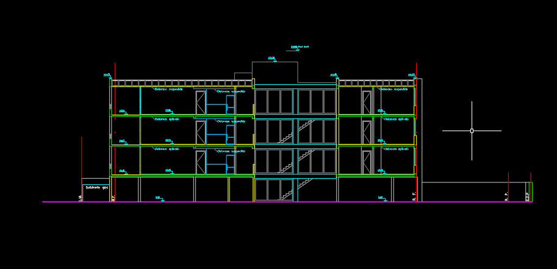

Proyectos
Nuestra tarea es poder orientarlo y ayudarlo a superar los problemas que surgen a diario en la industria de la construcción. Realizamos entre otras tareas:
| • Cálculo de estructuras metálicas y de hormigón, verificaciones para cambio de uso. |
|---|
| • Patologías estructurales. |
| • Informes y documentación de proyectos. |
| • Supervisión de obra, seguimiento de subcontratos, proveedores y compras. |
| • Confección de planes de trabajo, cómputos. |
| • Documentación gráfica (planos, modelos 3D, renderizados). |
| • Tareas de consultoría en obra. |
| • Capacitaciones. |
| • Implementación BIM. |
